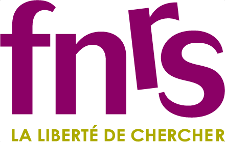
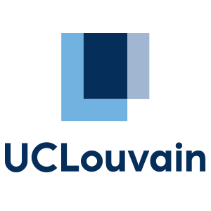
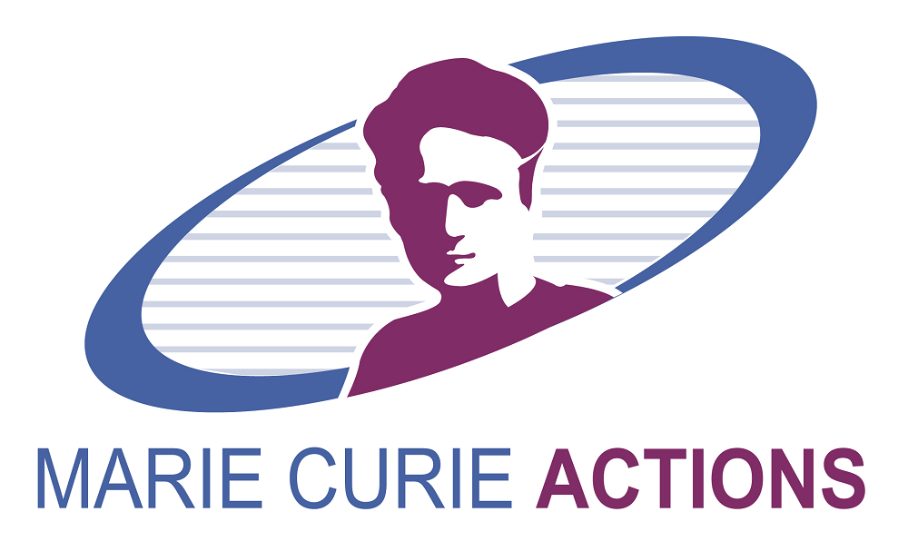
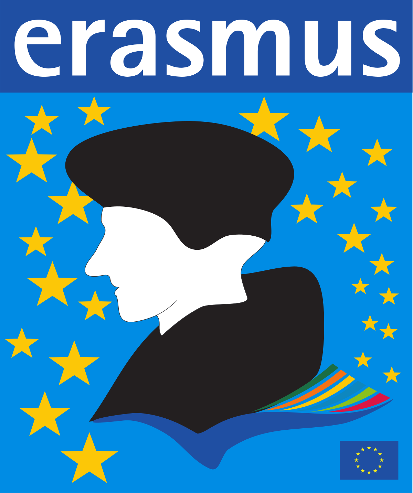
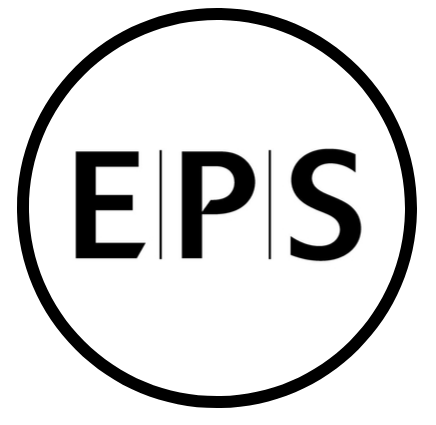
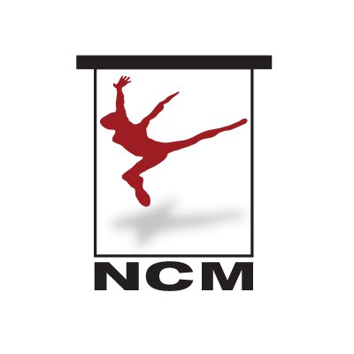

The Brain, Action, and Skill (BAS) Laboratory study how humans control movements & acquire motor skills
Our research uses a multidisciplinary combination of non-invasive brain stimulation, neuroimaging, computational modeling, and behavioural experiments to understand motor learning and movement control.
Investigating how humans learn and automate movements through extensive practice.
Understanding how imagining actions and observing others affects the movement system.
Addressing adverse effects of ageing and stroke on movement control and recovery.
Based in UC Louvain, Belgium, the BAS Laboratory is part of the Cognition and Systems division of the Institute of Neuroscience in Brussels, with additional facilities in Louvain-la-Neuve.
Our research has been supported by several national and international agencies.





